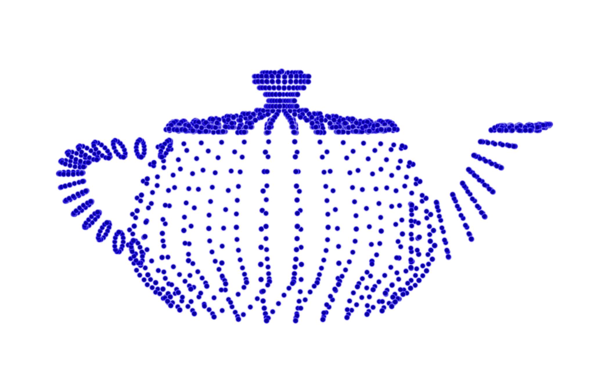
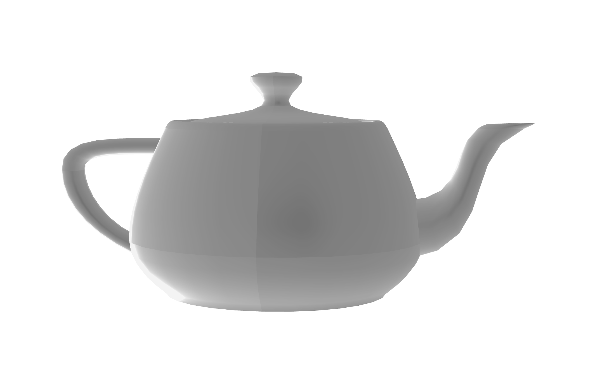
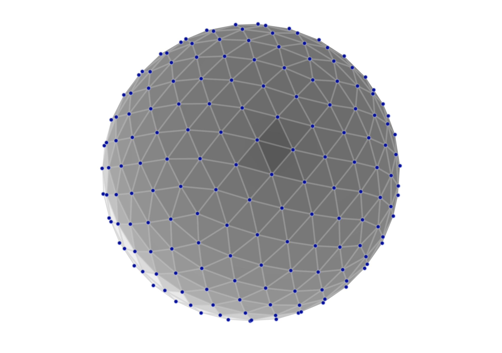
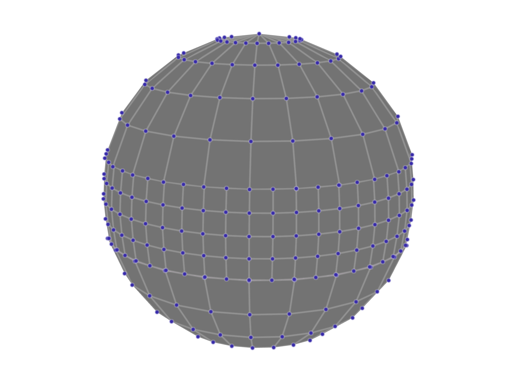

<!doctype html>
<html>
  <head>
<meta charset="utf-8">
<meta name="viewport" content="width=device-width, initial-scale=1.0, maximum-scale=1.0, user-scalable=no">

<title>Lecture 9 - Designing For the Web</title>

<link rel="stylesheet" href="https://cdnjs.cloudflare.com/ajax/libs/reveal.js/3.6.0/css/reveal.css">
<link rel="stylesheet" href="https://cdnjs.cloudflare.com/ajax/libs/reveal.js/3.6.0/css/theme/white.min.css">
<link rel="stylesheet" href="https://maxcdn.bootstrapcdn.com/font-awesome/4.5.0/css/font-awesome.min.css">

<!-- Theme used for syntax highlighting of code -->
<link rel="stylesheet" href="https://cdnjs.cloudflare.com/ajax/libs/highlight.js/9.12.0/styles/github.min.css">
<link href="https://fonts.googleapis.com/css?family=Questrial" rel="stylesheet">

<!-- Printing and PDF exports -->
<script>
    var link = document.createElement( 'link' );
    link.rel = 'stylesheet';
    link.type = 'text/css';
    link.href = window.location.search.match( /print-pdf/gi ) ?  '/revealjs/css/print/pdf.css' : '/revealjs/css/print/paper.css';
    document.getElementsByTagName( 'head' )[0].appendChild( link );
</script>
<script src="https://cdnjs.cloudflare.com/ajax/libs/reveal.js/3.6.0/lib/js/head.min.js"></script>
<script src="https://cdnjs.cloudflare.com/ajax/libs/reveal.js/3.6.0/js/reveal.min.js"></script>


<style type="text/css">
.reveal section.present {
  text-align: left;
}
.centered {
  text-align: center;
}
.reveal {
  font-size: 30px;
  font-family: 'Questrial', sans-serif;
}
.reveal section img {
  box-shadow: none;
  border: 0px;
  display: block;
  margin-left: auto;
  margin-right: auto;
}
.reveal bigtext {
  font-size: 800%;
}

.reveal h1, .reveal h2, .reveal h3 {
  text-transform: none;
}

.reveal .titleslide h1 {
  text-align: center;
}
.reveal .titleslide h2 {
  text-align: right;
}

.vertical_center section {
  vertical-align: middle;
}

.left_abs {
  left:0%;
  text-align: left;
  float: left;
  width:50%;
  z-index:-10;
}

.left {
  left:-8.33%;
  text-align: left;
  float: left;
  width:50%;
  z-index:-10;
}

.right {
  left:31.25%;
  top: 75px;
  float: right;
  text-align: right;
  z-index:-10;
  width:50%;
}

.reveal table td {
  text-align: left;
  padding: 0.2em 0.5em 0.2em 0.5em;
  border: solid; 
}

.reveal table tbody tr:last-child th,
.reveal table tbody tr:last-child td {
  border-bottom: solid; }

.reveal .table-hl {
  background: #aaa;
}


</style>
  </head>

  <body>
    <div class="reveal">
      <div class="slides">
        <section data-markdown
           data-separator="^\n---\n"
           data-separator-vertical="^\n----\n"
           data-separator-notes="notes?:"
           >
          <script type="text/template">
## Warm-Up Activity

1. What is the visualization trying to show?
1. What are its methods?
1. What are the strengths / weaknesses?

https://projects.fivethirtyeight.com/mortality-rates-united-states/

Don't worry - there aren't necessarily right or wrong answers here!

---

## This lecture

 * Graphics concepts and considerations for the web
 * Surfaces and meshes
 * Sketchfab & interactive 3D movies online for planet and galaxy simulations

---

## 3D Computer Graphics

 * Composed of virtual 3D objects
 * Often time evolving (animated)
 * Displayed on 2D screens
 * Attempts to simulate photorealism to some extent
 
notes: note these can also be displayed on 3D screens, but the way that happens is a little different

---

## Computer Graphics Terms

 * Real-time vs Pre-Rendered graphics
 * Frames vs Timesteps


notes:
real-time graphics refresh the screen faster than the eye perceives, usually at least 30 times a second. Pre-rendered can take all the time in the world.

Frames are individual images that when strung together in time create the illusion of motion. They are the "timesteps" of a movie. But scientific data also have "timesteps" which may not be synchronized with the speed of the movie.

You'll notice in this GIF, the frame rate and the time step rate are different - we are zooming out quicker than we are updating the data in the images

---

## Computer Graphics Acronyms

 * VFX - visual effects
 * CGI - computer graphics imagery
 * FPS - frames per second
 * GUI - graphic user interface
 * HUD - heads up display
 
notes: you aren't required to remember any of these, but if you see them pop up, here they are

---

## Common Frame Rates

 * 24 FPS - theatrical films
 * 30 FPS - TV and specialty theaters
 * 48 FPS, 60 FPS - video games, interactive graphics, virtual reality
 * 120 FPS - really good virtual reality

<iframe width="560" height="315" src="https://www.youtube.com/embed/pfiHFqnPLZ4?rel=0" frameborder="0" allow="accelerometer; autoplay; encrypted-media; gyroscope; picture-in-picture" allowfullscreen></iframe>

notes:

you can note if you try to follow the 15 or 30 FPS (frames per second) with your eye you see that it is jumpy

24 fps is considered the absolute minimum necessary frequency so that people don't perceive individual frames.

48 fps is widely considered so fast the human eye can't perceive any separation at all - but 60 fps is safer.

if you watch a TV and it seems distractingly smooth, it's probably doing frame interpolation to make 30fps content play back at 60fps.

This youtube video actually only plays at 60FPS, so the 120 ball is kind of pointless.

---

## 3D Geometry

All 3D geometry is represented as:

 * Points



notes: how do we represent geometry in space? one way is points...

---

## 3D Geometry

All 3D geometry is represented as:

 * Points
 * Edges


---

## 3D Geometry

All 3D geometry is represented as:

 * Points
 * Edges
 * Surfaces



notes: we can connect these points and images to make surfaces

---

## 3D Geometry

All 3D geometry is represented as:

 * Points
 * Edges
 * Surfaces
 * Volumes


notes: or we can give the 3D surfaces some depth and make them into shapes

here these 3D cubes are called "voxels" which are similar to 2D "pixels" but for volumes

---

## 3D Geometry

<iframe src="https://player.vimeo.com/video/169599296?color=949494&title=0&byline=0&portrait=0" width="640" height="360" frameborder="0" allow="autoplay; fullscreen" allowfullscreen></iframe>

Link: https://player.vimeo.com/video/169599296?color=949494&title=0&byline=0&portrait=0

notes:

You can convert between points, surfaces and volumes, ofthen to really cool effects like shown - you can get some bananas permutations.

---

## 3D Geometry

Surfaces can be encoded as:

 * Implicit primitives


notes:
primitives are defined by mathematical functions. This sphere is defined by a center position and a radius.

---

## 3D Geometry

Surfaces can be encoded as:

 * Implicit primitives
 * Polygonal Meshes


notes:
Quadrilaterals are a good way to see the flow of geometry, which artists like, but quads can bend.

---

## 3D Geometry

Surfaces can be encoded as:

 * Implicit primitives
 * Polygonal Meshes



notes:
Triangles cannot bend because three points define a plane. So automatic geometry like the stuff you use in science is more often going to be triangles.

---

## 3D Geometry

Surfaces can be encoded as:

 * Implicit primitives
 * Polygonal Meshes
 * NURBS or Bezier Surfaces


notes:
This is a NURBS sphere. You can see the control vertices are floating off the surface. Every patch on the surface is influenced by many of the neighboring points.

Here if I wanted to deform this surface, I could pull at one of the blue points and the shape of the surface would change.

---

## 3D Geometry

Surfaces can be encoded as:

 * Implicit primitives
 * Polygonal Meshes
 * NURBS or Bezier Surfaces
 * Subdivision Surfaces



notes:
Subdivision surfaces are like those adaptive volumes we saw last week. You can add detail where you want it.

---

## 3D Geometry

Datasets with many fields called "attributes":

 1. Transform Attributes (translate, rotate, scale)


notes:
These transform attributes are the same for all objects.

Recall we discussed some of these in earlier classes for 2D plots.  Same principle here.

---

## 3D Geometry

Datasets with many fields called "attributes":

 1. Transform Attributes (translate, rotate, scale)
 1. Shape Attributes (radius, bumpyness, twistyness)


notes:
shape attributes depend totally on what the shape is.

These are something you won't really see in 2D unless you start modifying 2D shapes with some weird transforms.

---

## OpenGL

Before most computers could show graphics of any kind, several companies began to compete for proprietary formats.

A company called Silicon Graphics stepped in and created an Open Source specification for computer graphics called OpenGL. 

To this day, most software graphics you see are rendered using some version of OpenGL - including the whole Mac operating system.

notes:
Many other open source projects have copied this model, such as OpenCV (computer vision), OpenCL (gpus), and OpenMP (multi-processing).

---

## WebGL

OpenGL is primarily intended for C-style programming.

WebGL implements the same set of tools for rendering through a web browser. This allows us to natively render 3D content on the internet!

---

## SketchFab & ipyvolume

SketchFab uses WebGL to render YOUR 3D data in a 3D viewport in a web browser. 

[SketchFab.com](https://sketchfab.com)

ipyvolume uses WebGL to render volumes to your jupyter notebook.

---

## Rendering in 3D: From 3D objects to images

Our task is to take our physical description of 3D space and convey to the computer how to bounce light around.
 

---

## Rendering in 3D: From 3D objects to images

Our task is to take our physical description of 3D space and convey to the computer how to bounce light around.
 
For example:


Image Credit: ALMA & Erik Rosolowsky

notes: in this image there are layers of transmission and absorption (a transmission function encodes this) which added together make this volume rendering

---

## Rendering in 3D: From 3D objects to images

Our task is to take our physical description of 3D space and convey to the computer how to bounce light around.

We talked about this in abstract but today we'll get practicle:
1. learn how to turn our numerical simulations into 3D geometry files
1. make aesthetic choices motivated by physics
1. load our models into MeshLab to "debug"
1. load final(ish) models into Sketchfab to make 3D movies

---

## Software

1. Setup a Sketchfab account
1. Download MeshLab

notes: actually pause in class to do this!

---

## Planets - Texture Mapping

<!-- .slide: data-background-image="images/textureMapping/textureMapping.001.jpeg" data-background-size="auto 75%" -->

notes: we will do something called texture mapping where we "wrap" a high resolution image on a low resolution mesh object

here you can see how this works for a face, and it indeed looks creepy

---

## Planets - Texture Mapping

<!-- .slide: data-background-image="images/textureMapping/textureMapping.002.jpeg" data-background-size="auto 75%" -->

notes: we will do this with our planets as we will have very low resolution spheres

why? this is actually a graphics trick that is widely used - it turns out is more computationally intensive to render lots of polygons than few polygons and high resolution textures

---

## Planets - Texture Mapping

<!-- .slide: data-background-image="images/textureMapping/textureMapping.003.jpeg" data-background-size="auto 75%" -->

notes: here are a few of the texture maps that are included with the files you'll download for your 3D movies

---

<!-- .slide: data-background-image="images/objFiles/objFiles.001.jpeg" data-background-size="auto 95%" -->

notes: we'll go through the code in a moment, but basically, you'll run some code with what sorts of "planets" your planet simulations are and you'll end up with a directory called something like "MyPlanetSystem"

in this directory you will have the planet textures and two files an *obj*, or object file, and an *mtl*, or material, file

these files do different things to combine to make your model

---

<!-- .slide: data-background-image="images/objFiles/objFiles.002.jpeg" data-background-size="auto 95%" -->

notes: your obj file gives vertex information geometric locations where we should "pin" our texture maps

the vertexes tell us where each "square" that makes up our sphere goes - you can see this sort of in this image here

---

<!-- .slide: data-background-image="images/objFiles/objFiles.003.jpeg" data-background-size="auto 95%" -->

notes: our material files can give us information about background colors (which we won't be using) and also the names of any texture maps we'll be using like "sun_texture1.jpg" for example

---

<!-- .slide: data-background-image="images/objFiles/objFiles.004.jpeg" data-background-size="auto 95%" -->

notes: you will use these files to import into MeshLab and upload to sketchfab

I *highly* recommend you look at them in MeshLab first since processing models to Sketchfab takes a while!

---

<!-- .slide: data-background-image="images/objFiles/objFiles.005.jpeg" data-background-size="auto 95%" -->

notes: some tips and tricks - for sketchfab be sure you select *all* files to upload

---

<!-- .slide: data-background-image="images/objFiles/objFiles.006.jpeg" data-background-size="auto 95%" -->

notes: when debugging in MeshLab when you first upload you might see some black spheres - to fix this go to the "Render" part of the tool bar and select "Color" and then "Per Mesh"

---

<!-- .slide: data-background-image="images/plyFiles/plyFiles.001.jpeg" data-background-size="auto 95%" -->

notes: if you have been doing galaxy simulations you'll also have an option to upload those as well in a different file format called "PLY" which gives the dot locations and their colors

notice that these can *only* be uploaded on sketchfab so its recommended you try out the planet files first to get the hang of things

---

<!-- .slide: data-background-image="images/miscSlides/miscSlides.005.jpeg" data-background-size="auto 95%" -->

notes: if you have tried a few different models and are ready to start making things more complex, you can start adding in physically modivated sizes and planet textures to your viz

for example, depending on the mass of your star, it should have a different size and color as shown by this chart right here

---

<!-- .slide: data-background-image="images/miscSlides/miscSlides.006.jpeg" data-background-size="auto 95%" -->

notes: the same thing is true of planets - depending on their mass, they usually have different size

additionally, their mass and size determines what type of planet - is it earth like and therefore you should use a mars/earth texture?  Or is it more jupyter like and you should use a jupyter or saturn texture?

is it far out from the star and gaseous? If so, maybe a neptune texture

---

# Let's do some 3D planets with Python!


          </script>
        </section>
      </div>
    </div>
<script>
    // More info about config & dependencies:
    // - https://github.com/hakimel/reveal.js#configuration
    // - https://github.com/hakimel/reveal.js#dependencies
    Reveal.initialize({
        dependencies: [
            { src: 'https://cdnjs.cloudflare.com/ajax/libs/reveal.js/3.6.0/plugin/markdown/marked.js' },
            { src: 'https://cdnjs.cloudflare.com/ajax/libs/reveal.js/3.6.0/plugin/markdown/markdown.min.js' },
            { src: 'https://cdnjs.cloudflare.com/ajax/libs/reveal.js/3.6.0/plugin/notes/notes.min.js', async: true },
            { src: 'https://cdnjs.cloudflare.com/ajax/libs/reveal.js/3.6.0/plugin/highlight/highlight.min.js', async: true, callback: function() { hljs.initHighlightingOnLoad(); } },
            { src: '/reveal.js-plugins/chalkboard/chalkboard.js' },
            { src: 'https://cdnjs.cloudflare.com/ajax/libs/reveal.js/3.6.0/plugin/math/math.min.js', async: true }
        ],
		keyboard: {
			67: function() { RevealChalkboard.toggleNotesCanvas() },	// toggle notes canvas when 'c' is pressed
			66: function() { RevealChalkboard.toggleChalkboard() },	// toggle chalkboard when 'b' is pressed
			46: function() { RevealChalkboard.clear() },	// clear chalkboard when 'DEL' is pressed
			 8: function() { RevealChalkboard.reset() },	// reset chalkboard data on current slide when 'BACKSPACE' is pressed
			68: function() { RevealChalkboard.download() },	// downlad recorded chalkboard drawing when 'd' is pressed
		},
        center: false,
        transition: 'none',
        backgroundTransition: 'none',
        showNotes: true,
        progress: false,
	slideNumber: true,

    });
</script>
  </body>
</html>

